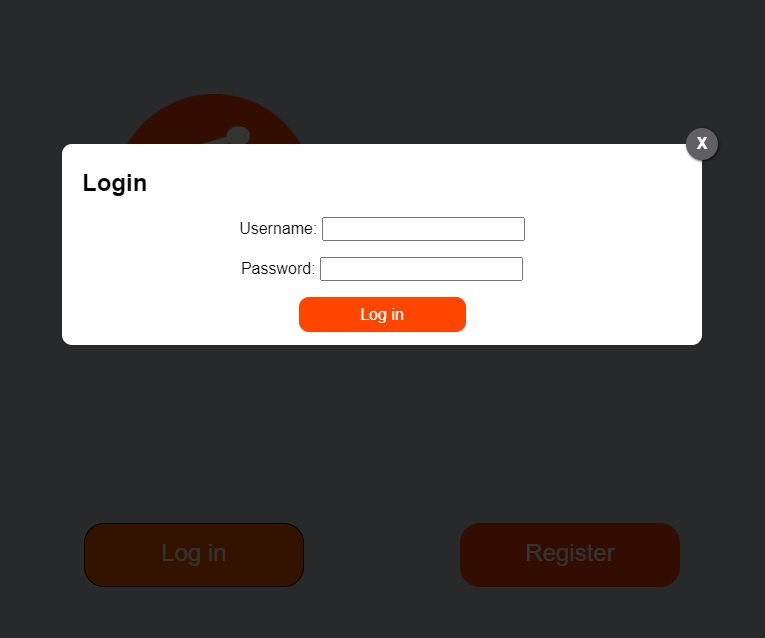
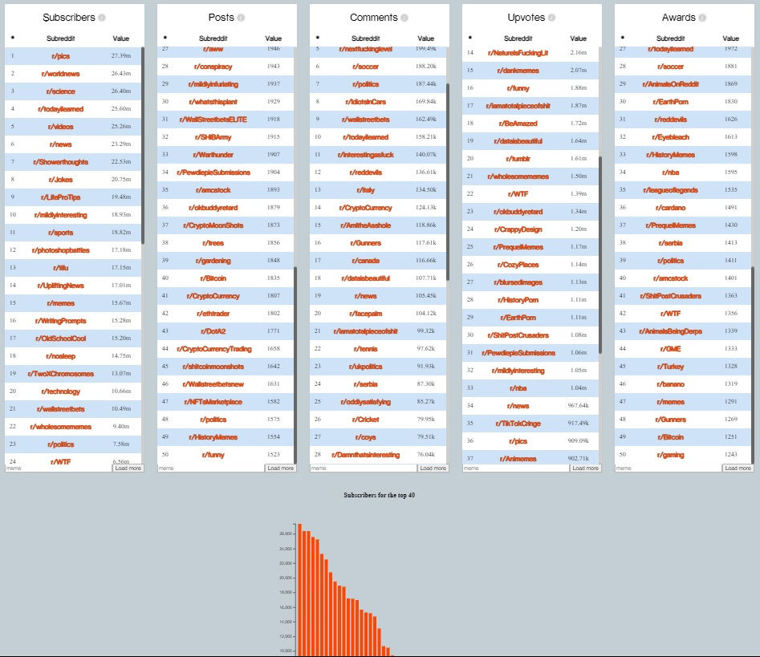
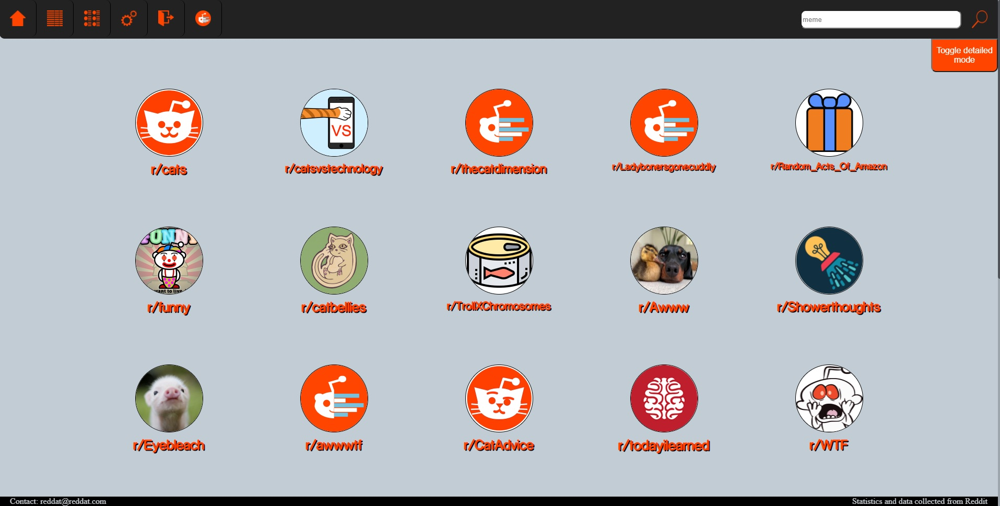
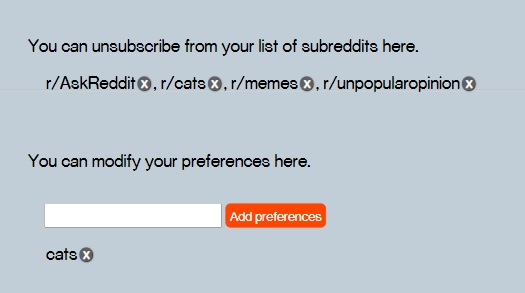
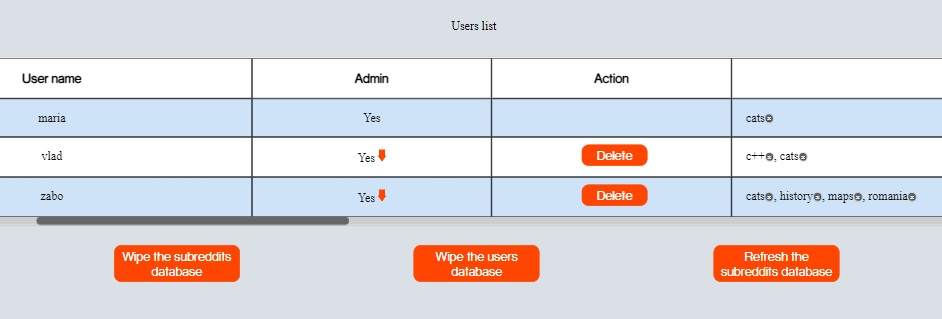

In this section we will discuss how the user interacts with the project ReDat.
This application means to explore and monitor the activity of certain subreddits. Using the data recorded from accessing these subreddits, it will generate statistics and a few charts that will help the user to better visualize them.
The user is meant to access the link of the application:
The application requires the user to login to an existing account or to create one on the spot. Having chosen either of those, after the user clicks on the button, a small window will pop up with the necessary informations.
After the login / register process, the user will be redirected to a page that we will call: "Feed Page".

The navigation bar has a number of features including:
The user is now able to see a multitude of subreddits and a navigation bar. The "matrix" of subreddits is made of clickable icons of each subreddit and it includes a picture taken from the subreddit page and the name of the subreddit right below it.

After clicking on the second button from left to right, the user is redirected to a page that shows a few rankings and two graphs.
There will be 5 lists of rankings, that are each scrollable since they are a top of the first 50 subreddits. The tops are made using the criteria shown above and the values represent the number of either subscribers, posts, comments, upvotes or awards.
Right below the tops, the user can see 2 bar charts that are a visual representation of two rankings, after posts and after comments.
On the right side of the name of the subreddit the user can press a bell icon to subscribe and unsubscribe to it. If subscribed, the bell is coloured bright orange, else its a faded shade of orange. After subscribing, the list of subreddits can be found on the Settings Page.
Each subreddit will show a number of data in the sections that include the ranking based on the number of subscribers, posts, comments, upvotes, awards, all listed before per subscriber, new subscribers, new posts per day.
The user can hover over the "i" symbol next to the Ranking name to see the exact amount of either subscribers, or posts, or the type listed below Ranking name.
After checking all the statistics regarding rank, the user is able to see the top posts from the last hour, the last day or from all the time.
Below them there are two graphs, a bar chart and a pie chart. The bar chart represents the number of comments among the first 26 reddit posts on the subreddit section hot. The pie chart was made calculating how many of 26 posts have which upvote percentage.

In this page, the user can choose to unfollow a subreddit it chose as preference by clicking the "x" button right next to the subreddit name.
The user can also add a preference by searching the name of the subreddit in the bar and pressing the "Add preference" button.

Presented with the logo of the application in the navbar, this page shows to administrators a table containing the users, whether they are admins or not, an action button to delete the account, and a list of preferences. Below the table, there are three buttons for wiping and refreshing the subreddits database and for wiping the user database.
